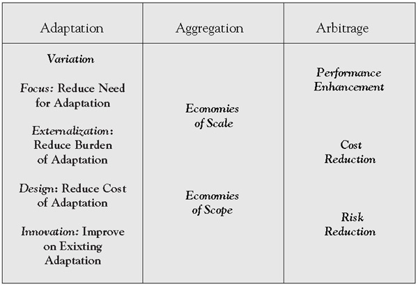

Ghemawat so-called AAA framework offers three generic approaches to global value creation. Adaptation strategiesStrategies that seek to increase revenues and market share by tailoring one or more components of a firm’s business model to suit local requirements or preferences. seek to increase revenues and market share by tailoring one or more components of a company’s business model to suit local requirements or preferences. Aggregation strategies focus on achieving economies of scale or scope by creating regional or global efficiencies; they typically involve standardizing a significant portion of the value proposition and grouping together development and production processes. Arbitrage is about exploiting economic or other differences between national or regional markets, usually by locating separate parts of the supply chain in different places.
Adaptation—creating global value by changing one or more elements of a company’s offer to meet local requirements or preferences—is probably the most widely used global strategy. The reason for this will be readily apparent: some degree of adaptation is essential or unavoidable for virtually all products in all parts of the world. The taste of Coca-Cola in Europe is different from that in the United States, reflecting differences in water quality and the kind and amount of sugar added. The packaging of construction adhesive in the United States informs customers how many square feet it will cover; the same package in Europe must do so in square meters. Even commodities such as cement are not immune: its pricing in different geographies reflects local energy and transportation costs and what percentage is bought in bulk.
Ghemawat subdivides adaptation strategies into five categories: variation, focus, externalization, design, and innovation (Figure 3.1 "AAA Strategies and Their Variants").
Variation strategiesStrategies that involve making changes in products and services, policy adjustments, business positioning, and expectations for success. not only involve making changes in products and services but also making adjustments to policies, business positioning, and even expectations for success. The product dimension will be obvious: Whirlpool, for example, offers smaller washers and dryers in Europe than in the United States, reflecting the space constraints prevalent in many European homes. The need to consider adapting policies is less obvious. An example is Google’s dilemma in China to conform to local censorship rules. Changing a company’s overall positioning in a country goes well beyond changing products or even policies. Initially, Coke did little more than “skim the cream” off big emerging markets such as India and China. To boost volume and market share, it had to reposition itself to a “lower margin–higher volume” strategy that involved lowering price points, reducing costs, and expanding distribution. Changing expectations for, say, the rate of return on investment in a country, while a company is trying to create a presence is also a prevalent form of variation.
Figure 3.1 AAA Strategies and Their Variants
A second type of adaptation strategies uses a focusStrategies that focus on particular products, geographies, value chain stages, or market segments as a way of reducing differences across regions. on particular products, geographies, vertical stages of the value chain, or market segments as a way of reducing the impact of differences across regions. A product focus takes advantage of the fact that wide differences can exist within broad product categories in the degree of variation required to compete effectively in local markets. Ghemawat cites the example of television programs: action films need far less adaptation than local newscasts. Restriction of geographic scope can permit a focus on countries where relatively little adaptation of the domestic value proposition is required. A vertical focus strategy involves limiting a company’s direct involvement to specific steps in the supply chain while outsourcing others. Finally, a segment focus involves targeting a more limited customer base. Rather than adapting a product or service, a company using this strategy chooses to accept the reality that without modification, their products will appeal to a smaller market segment or different distributor network from those in the domestic market. Many luxury good manufacturers use this approach.
Whereas focus strategies overcome regional differences by narrowing scope, externalization strategiesStrategies that transfer responsibility for specific parts of a firm’s business model to partner firms to accommodate local requirements, lower cost, or reduce risk. transfer—through strategic alliances, franchising, user adaptation, or networking—responsibility for specific parts of a company’s business model to partner companies to accommodate local requirements, lower cost, or reduce risk. For example, Eli Lilly extensively uses strategic alliances abroad for drug development and testing. McDonald’s growth strategy abroad uses franchising as well as company-owned stores. And software companies heavily depend on both user adaptation and networking for the development of applications for their basic software platforms.
A fourth type of adaptation focuses on designStrategies that focus on design flexibility and standardization to reduce the cost of variation. to reduce the cost of, rather than the need for, variation. Manufacturing costs can often be achieved by introducing design flexibility so as to overcome supply differences. Introducing standard production platforms and modularity in components also helps to reduce cost. A good example of a company focused on design is Tata Motors, which has successfully introduced a car in India that is affordable to a significant number of citizens.
A fifth approach to adaptation is innovationStrategies that are characterized by their focus on improving the effectiveness of adaptation efforts., which, given its crosscutting effects, can be characterized as improving the effectiveness of adaptation efforts. For instance, IKEA’s flat-pack design, which has reduced the impact of geographic distance by cutting transportation costs, has helped that retailer expand into 3 dozen countries.
When Ray Kroc opened his first McDonald’s in Des Plaines, Illinois, he could hardly have envisioned the golden arches rising 5 decades later in one of the oldest commercial streets in the world. But McDonald’s began dreaming of India in 1991, a year after opening its first restaurant in China. The attraction was obvious: 1.1 billion people, with 300 million destined for middle-class status.
But how do you sell hamburgers in a land where cows are sacred and 1 in 5 people are vegetarian? And how do you serve a largely poor consumer market that stretches from the Himalayas to the shores of the Indian Ocean? McDonald’s executives in Oak Brook struggled for years with these questions before finding the road to success.
McDonald’s has made big gains since the debut of its first two restaurants in India, in Delhi and Mumbai, in October 1996. Since then, the fast-food chain has grown to more than 160 outlets. The Indian market represents a small fraction of McDonald’s $24 billion in annual revenues. But it is not insignificant because the company is increasingly focused on high-growth markets. “The decision to go in wasn’t complicated,” James Skinner, McDonald’s chief executive officer, once said. “The complicated part was deciding what to sell.”
At first, McDonald’s path into India was fraught with missteps. First, there was the nonbeef burger made with mutton. But the science was off: mutton is 5% fat (beef is 25% fat), making it rubbery and dry. Then there was the french fry debacle. McDonald’s started off using potatoes grown in India, but the local variety had too much water content, making the fries soggy. Chicken kabob burgers? Sounds like a winner except that they were skewered by consumers. Salad sandwiches were another flop: Indians prefer cooked foods.
If that was not enough, in May 2001, the company was picketed by protesters after reports surfaced in the United States that the chain’s fries were injected with beef extracts to boost flavor—a serious infraction for vegetarians. McDonald’s executives in India denied the charges, claiming their fries were different from those sold in America.
But the company persevered, learned, and succeeded. It figured out what Indians wanted to eat and what they would pay for it. It built, from scratch, a mammoth supply chain—from farms to factories—in a country where elephants, goats, and trucks share the same roads. To deal with India’s massive geography, the company divided the country into two regions: the north and east, and the south and west. Then it formed 50-50 joint ventures with two well-connected Indian entrepreneurs: Vikram Bakshi, who made his fortune in real estate, runs the northern region; and Amit Jatia, an entrepreneur who comes from a family of successful industrialists, manages the south.
Even though neither had any restaurant experience, this joint-venture management structure gave the company what it needed: local faces at the top. The two entrepreneurs also brought money: before the first restaurant opened, the partners invested $10 million into building a workable supply chain, establishing distribution centers, procuring refrigerated trucks, and finding production facilities with adequate hygiene. They also invested $15 million in Vista Processed Foods, a food processing plant outside Mumbai. In addition, Mr. Jatia, Mr. Bakshi, and 38 staff members spent an entire year in the Indonesian capital of Jakarta studying how McDonald’s operated in another Asian country.
Next, the Indian executives embarked on basic-menu research and development (R&D). After awhile, they hit on a veggie burger with a name Indians could understand: the McAloo Tikki (an “aloo tikki” is a cheap potato cake locals buy from roadside vendors).
The lesson in the McDonald’s India case: local input matters. Today, 70% of the menu is designed to suit Indians: the Paneer Salsa Wrap, the Chicken Maharaja Mac, the Veg McCurry Pan. The McAloo, by far the best-selling product, also is being shipped to McDonald’s in the Middle East, where potato dishes are popular. And in India, it does double duty: it not only appeals to the masses; it is also a hit with the country’s 200 million vegetarians.
Another lesson learned from the McDonald’s case: vegetarian items should not come into contact with nonvegetarian products or ingredients. Walk into any Indian McDonald’s and you will find half of the employees wearing green aprons and the other half in red. Those in green handle vegetarian orders. The red-clad ones serve nonvegetarians. It is a separation that extends throughout the restaurant and its supply chain. Each restaurant’s grills, refrigerators, and storage areas are designated as “veg” or “non-veg.” At the Vista Processed Foods plant, at every turn, managers stressed the “non-veg” side was in one part of the facility, and the “vegetarian only” section was in another.
Today, after many missteps, one can truly imagine the ghost of Ray Kroc asking Indians one of the greatest questions of all time—the one that translates into so many cultures: “You want fries with that?” Yes, Ray, they do.
AggregationStrategies that focus on achieving globalized economies of scale or scope by creating efficiencies based on exploiting similarities among geographies or markets. is about creating economies of scale or scope as a way of dealing with differences (see Figure 3.1 "AAA Strategies and Their Variants"). The objective is to exploit similarities among geographies rather than adapting to differences but stopping short of complete standardization, which would destroy concurrent adaptation approaches. The key is to identify ways of introducing economies of scale and scope into the global business model without compromising local responsiveness.
Adopting a regional approach to globalizing the business model—as Toyota has so effectively done—is probably the most widely used aggregation strategy. As discussed in the previous chapter, regionalization or semiglobalization applies to many aspects of globalization, from investment and communication patterns to trade. And even when companies do have a significant presence in more than one region, competitive interactions are often regionally focused.
Examples of different geographic aggregation approaches are not hard to find. Xerox centralized its purchasing, first regionally, later globally, to create a substantial cost advantage. Dutch electronics giant Philips created a global competitive advantage for its Norelco shaver product line by centralizing global production in a few strategically located plants. And the increased use of global (corporate) branding over product branding is a powerful example of creating economies of scale and scope. As these examples show, geographic aggregation strategies have potential application to every major business model component.
Geographic aggregation is not the only avenue for generating economies of scale or scope. The other, nongeographic dimensions of the CAGE framework introduced in Chapter 1 "Competing in a Global World"—cultural, administrative, geographic, and economic—also lend themselves to aggregation strategies. Major book publishers, for example, publish their best sellers in but a few languages, counting on the fact that readers are willing to accept a book in their second language (cultural aggregation). Pharmaceutical companies seeking to market new drugs in Europe must satisfy the regulatory requirements of a few selected countries to qualify for a license to distribute throughout the EU (administrative aggregation). As for economic aggregation, the most obvious examples are provided by companies that distinguish between developed and emerging markets and, at the extreme, focus on just one or the other.
The history of globalization at the Whirlpool Corporation—a leading company in the $100-billion global home-appliance industry—illustrates the multitude of challenges associated with globalizing a business model. Whirlpool manufactures appliances across all major categories—including fabric care, cooking, refrigeration, dishwashing, countertop appliances, garage organization, and water filtration—and has a market presence in every major country in the world. It markets some of the world’s most recognized appliance brands, including Whirlpool, Maytag, KitchenAid, Jenn-Air, Amana, Bauknecht, Brastemp, and Consul. Of these, the Whirlpool brand is the world’s top-rated global appliance brand and ranks among the world’s most valuable brands. In 2008, Whirlpool realized annual sales of approximately $19 billion, had 70,000 employees, and maintained 67 manufacturing and technology research centers around the world.http://www.whirlpoolcorp.com/about/history.aspx
In the late 1980s, Whirlpool Corporation set out on a course of growth that would eventually transform the company into the leading global manufacturer of major home appliances, with operations based in every region of the world. At the time, Dave Whitwam, Whirlpool’s chairman and CEO, had recognized the need to look for growth beyond the mature and highly competitive U.S. market. Under Mr. Whitwam’s leadership, Whirlpool began a series of acquisitions that would give the company the scale and resources to participate in global markets. In the process, Whirlpool would establish new relationships with millions of customers in countries and cultures far removed from the U.S. market and the company’s roots in rural Benton Harbor, Michigan.
Whirlpool’s global initiative focused on establishing or expanding its presence in North America, Latin America, Europe, and Asia. In 1989, Whirlpool acquired the appliance business of Philips Electronics N.V., which immediately gave the company a solid European operations base. In the western hemisphere, Whirlpool expanded its longtime involvement in the Latin America market and established a presence in Mexico as an appliance joint-venture partner. By the mid-1990s, Whirlpool had strengthened its position in Latin America and Europe and was building a solid manufacturing and marketing base in Asia.
In 2006, Whirlpool acquired Maytag Corporation, resulting in an aligned organization able to offer more to consumers in the increasingly competitive global marketplace. The transaction created additional economies of scale. At the same time, it expanded Whirlpool’s portfolio of innovative, high-quality branded products and services to consumers.
Executives knew that the company’s new scale, or global platform, that emerged from the acquisitions offered a significant competitive advantage, but only if the individual operations and resources were working in concert with each other. In other words, the challenge is not in buying the individual businesses—the real challenge is to effectively integrate all the businesses together in a meaningful way that creates the leverage and competitive advantage.
Some of the advantages were easily identified. By linking the regional organizations through Whirlpool’s common systems and global processes, the company could speed product development, make purchasing increasingly more efficient and cost-effective, and improve manufacturing utilization through the use of common platforms and cross-regional exports.
Whirlpool successfully refocused a number of its key functions to its global approach. Procurement was the first function to go global, followed by technology and product development. The two functions shared much in common and have already led to significant savings from efficiencies. More important, the global focus has helped reduce the number of regional manufacturing platforms worldwide. The work of these two functions, combined with the company’s manufacturing footprints in each region, has led to the development of truly global platforms—products that share common parts and technologies but offer unique and innovative features and designs that appeal to regional consumer preferences.
Global branding was next. Today, Whirlpool’s portfolio ranges from global brands to regional and country-specific brands of appliances. In North America, key brands include Whirlpool, KitchenAid, Roper by Whirlpool Corporation, and Estate. Acquired with the company’s 2002 purchase of Vitromatic S.A., brands Acros and Supermatic are leading names in Mexico’s domestic market. In addition, Whirlpool is a major supplier for the Sears, Roebuck and Co. Kenmore brand. In Europe, the company’s key brands are Whirlpool and Bauknecht. Polar, the latest addition to Europe’s portfolio, is the leading brand in Poland. In Latin America, the brands include Brastemp and Consul. Whirlpool’s Latin American operations include Embraco, the world’s leading compressor manufacturer. In Asia, Whirlpool is the company’s primary brand and the top-rated refrigerator and washer manufacturer in India.
A third generic strategy for creating a global advantage is arbitrageStrategies that exploit economic or other differences between national or regional markets, usually by locating separate parts of the supply chain in different places. (see Figure 3.1 "AAA Strategies and Their Variants"). Arbitrage is a way of exploiting differences, rather than adapting to them or bridging them, and defines the original global strategy: buy low in one market and sell high in another. Outsourcing and offshoring are modern day equivalents. Wal-Mart saves billions of dollars a year by buying goods from China. Less visible but equally important absolute economies are created by greater differentiation with customers and partners, improved corporate bargaining power with suppliers or local authorities, reduced supply chain and other market and nonmarket risks, and through the local creation and sharing of knowledge.
Since arbitrage focuses on exploiting differences between regions, the CAGE framework described in Chapter 1 "Competing in a Global World" is of particular relevance and helps define a set of substrategies for this generic approach to global value creation.
Favorable effects related to country or place of origin have long supplied a basis for cultural arbitrageStrategies that are based on exploiting the favorable effects related to country or place of origin on consumer preferences.. For example, an association with French culture has long been an international success factor for fashion items, perfumes, wines, and foods. Similarly, fast-food products and drive-through restaurants are mainly associated with U.S. culture. Another example of cultural arbitrage—real or perceived—is provided by Benihana of Tokyo, the “Japanese steakhouse.” Although heavily American—the company has only one outlet in Japan out of more than 100 worldwide—it serves up a theatrical version of teppanyaki cooking that the company describes as “Japanese” and “eatertainment.”
Legal, institutional, and political differences between countries or regions create opportunities for administrative arbitrageStrategies that attempt to derive competitive advantage from legal, institutional, and political differences between countries or regions.. Ghemawat cites the actions taken by Rupert Murdoch’s News Corporation in the 1990s. By placing its U.S. acquisitions into holding companies in the Cayman Islands, the company could deduct interest payments on the debt used to finance the deals against the profits generated by its newspaper operations in Britain. Through this and other similar actions, it successfully lowered its tax liabilities to an average rate of less than 10%, rather than the statutory 30% to 36% of the three main countries in which it operated: Britain, the United States, and Australia. By comparison, major competitors such as Disney were paying close to the official rates.Ghemawat (2007a), chap. 6.
With steep drops in transportation and communication costs in the last 25 years, the scope for geographic arbitrageStrategies that focus on gaining competitive advantage through the leveraging differences in transportation and communication costs due to geographic differences.—the leveraging of geographic differences—has been diminished but not fully eliminated. Consider what is happening in medicine, for example. It is quite common today for doctors in the United States to take X-rays during the day, send them electronically to radiologists in India for interpretation overnight, and for the report to be available the next morning in the United States. In fact, reduced transportation costs sometimes create new opportunities for geographic arbitrage. Every day, for instance, at the international flower market in Aalsmeer, the Netherlands, more than 20 million flowers and 2 million plants are auctioned off and flown to customers in the United States.
As Ghemawat notes, in a sense, all arbitrage strategies that add value are “economic.” Here, the term economic arbitrageStrategies that are focused on leveraging differences in the costs of labor and capital, industry-specific inputs, or the availability of complementary products. is used to describe strategies that do not directly exploit cultural, administrative, or geographic differences. Rather, they are focused on leveraging differences in the costs of labor and capital, as well as variations in more industry-specific inputs (such as knowledge) or in the availability of complementary products.Ghemawat (2007a), chap. 6.
Exploiting differences in labor costs—through outsourcing and offshoring—is probably the most common form of economic arbitrage. This strategy is widely used in labor-intensive (garments) as well as high-technology (flat-screen TV) industries. Economic arbitrage is not limited to leveraging differences in labor costs alone, however. Capital cost differentials can be an equally rich source of opportunity.
Indian investment in Latin America is relatively small but growing quickly. Indian firms have invested about $7 billion in the region over the last decade, according to figures released by the Latin American division of India’s Ministry of External Affairs in New Delhi. The report projects that this amount will easily double in the next few years.
As India has become a magnet for foreign investment, Indian companies themselves are looking abroad for opportunities, motivated by declining global trade barriers and fierce competition at home. Their current focus is on Latin America, where hyperinflation and currency devaluation no longer dominate headlines.
Like China, India is trying to lock up supplies of energy and minerals to feed its rapidly growing economy. Indian firms have stakes in oil and natural gas ventures in Colombia, Venezuela, and Cuba. In 2006, Bolivia signed a deal with New Delhi-based Jindal Steel and Power, Ltd., which plans to invest $2.3 billion to extract iron ore and to build a steel mill in that South American nation.
At the same time, Indian information technology companies are setting up outsourcing facilities to be closer to their customers in the West. Tata Consultancy Services is the leader, employing 5,000 tech workers in more than a dozen Latin American countries.
Indian manufacturing firms, accustomed to catering to low-income consumers at home, are finding Latin America a natural market. Mumbai-based Tata Motors, Ltd., has formed a joint venture with Italy’s Fiat to produce small pickup trucks in Argentina. Generic drug makers, such as Dr. Reddy’s, are offering low-cost alternatives in a region where U.S. and European multinationals have long dominated.
The Indian government has carefully positioned India as a partner, rather than a rival out to steal the region’s resources and jobs, a common worry about China. Mexico has been particularly hard-hit by China’s rise. The Asian nation’s export of textiles, shoes, electronics, and other consumer goods has cost Mexico tens of thousands of manufacturing jobs, displaced it as the second-largest trading partner with the United States, and flooded its domestic market with imported merchandise. In 2006, Mexico’s trade deficit with China was a record $22.7 billion, but China has invested less than $100 million in the country since 1994, according to the Bank of Mexico.
Mexico’s trading relationship with India, albeit small, is much more balanced. Mexico’s trade deficit with India was just under half a billion dollars in 2006, and Indian companies have invested $1.6 billion here since 1994—or about 17 times more than China—according to Mexico’s central bank.
Some of that investment is in basic industries and traditional maquiladora factories making goods for export. For example, Mexico’s biggest steel plant is owned by ArcelorMittal. Indian pharmaceutical companies, too, are finding Latin America to be attractive for expansion. Firms including Ranbaxy Laboratories, Ltd., Aurobindo Pharma, Ltd., and Cadila Pharmaceuticals, Ltd., have sales or manufacturing operations in the region.